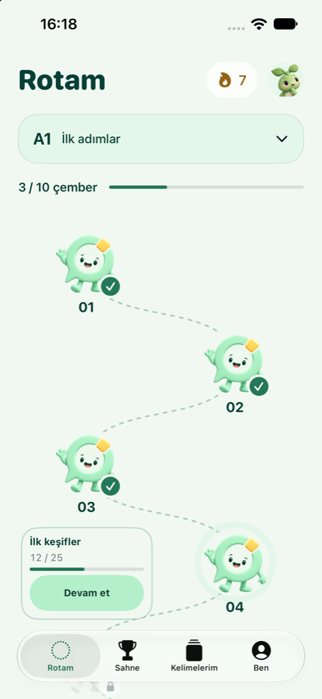

İpucunu yakala.
Türkçe açıklamayı oku veya dinle. Sıradaki harfle başlayan İngilizce kelimeyi bul.
Türkçe ipucunu dinle, İngilizce cevabını söyle.
Passalingo ile kelime pratiğini küçük, keyifli
bir günlük alışkanlığa dönüştür.
Bir sonraki kelimeyi merak ettiğin,
kaldığın yerden devam edebildiğin bir pratik.
Türkçe açıklamayı oku veya dinle. Sıradaki harfle başlayan İngilizce kelimeyi bul.
Sesinle oyuna katıl ya da cevabını yaz. Takıldığında pas geç, sonra yeniden dene.
Sonucunu gör, yeni kelimelerini keşfet. Tekrar kartlarıyla öğrendiklerini canlı tut.

İlk kelimelerinden daha zorlayıcı sorulara kadar, kendi seviyende ve kendi hızında ilerle.
A1–C2 seviyelerine göre düzenlenen rotalarla kelime pratiğine uygun bir yerden başla.
Sesli cevaplarla aktif pratik yap. Sessiz bir ortamda değilsen yazılı modu seç.
Tekrar kartları, kişisel ilerleme ve günlük hatırlatmalarla pratiğine geri dön.
Çemberleri tamamla, rozetlerini keşfet ve kelime yolculuğundaki gelişimini takip et.
İngilizce kelimelerini Türkçe ipuçlarıyla geliştirmek ve konuşarak pratik yapmak isteyenler için. Seviye rotaları, farklı deneyim düzeylerinde pratik yapmana yardımcı olur.
Hayır. Sesli ve yazılı cevap seçenekleri bulunur. Mikrofon izni sesli pratik içindir; yazılı modda mikrofon kullanman gerekmez.
Önceden indirilmiş kişisel pratik paketleriyle çevrimdışı çalışabilirsin. Giriş, yeni içerik indirme ve ilerlemeni hesabınla eşitleme için internet gerekir.
Passalingo henüz App Store’da yayımlanmadı. Yayınlandığında indirme bağlantısı bu sayfada yer alacak. Soruların için aşağıdaki formdan bize ulaşabilirsin.
Uygulamada Ayarlar → Hesabımı sil adımlarını izleyebilirsin. Verilerin ve silme süreci hakkında ayrıntıları gizlilik politikamızda bulabilirsin.
Sorun, önerin veya geri bildirimin mi var?
Passalingo’yu birlikte geliştirelim.